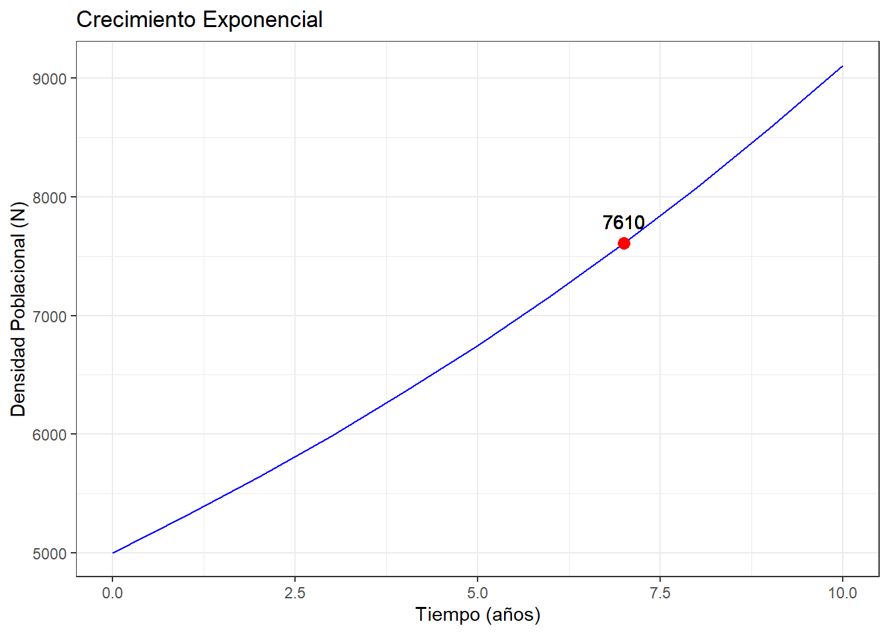
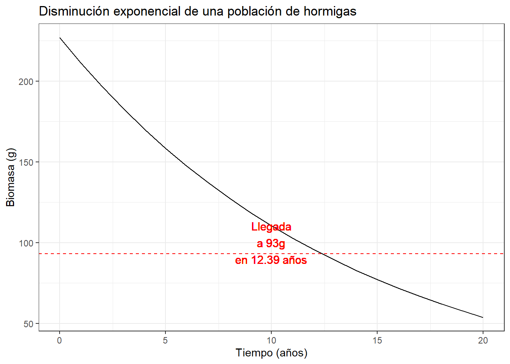

library(ggplot2)Taller 6. Visualización de Poblaciones
Datos de …

Introducción
Pendiente de documentar …
Objetivo de la actividad
Dar respuesa con procedimientos de visualización gráfica en R, a las siguientes preguntas, asociadas a modelos exponenciales y logísticos de poblaciones:
Modelos de crecimiento exponencial
Una población biológica crece a una tasa anual del 6%. Si la población actual es de 5000, ¿cuál será en 7 años?
Una población de aves crece a un ritmo anual del 5%. Si la población actual es de 2000, ¿cuántos años se tardará para que vuelvan a doblar? Redondea tu respuesta a la centésima más cercana.
Una población de hormigas presenta una tasa de disminución anual del 7,2%. ¿Cuántos años le tomará a esta población de 227 gramos para llegar a 93 gramos de biomasa?
Supongamos que la población de peces marinos crece a una tasa anual del 7%. Si la población actual es de 8000 individuos, ¿cuántos años se tardará para que llegue a 18000?
Una población silvestre crece a una tasa anual del 7%. Si la población aumenta a 2000 en 7 años, ¿Cuál sería el tamaño de la población inicial?
Una población de curíes de interés para consumo, crece a una tasa anual del 3%. Si la población actual es de 3.000 individuos, ¿cuántos años se tardará para que doble su densidad?
Una población endémica de mariposas declina su densidad anual en 12,5%. A partir de una muestra de 127 gramos de biomasa, ¿cuál será su biomasa a los 6 años?
De acuerdo al artículo que titular “U.S. reaching the 300 million person milestone”, se destaca en unos de sus apartes, que la población de U.S. alcanzó 200 millones de personas en 1967. De acuerdo a lo anterior:
Asumiendo que en 2007 la población alcanza los 303 millones (303.106), calcular la tasa de incremento instantáneo por año.
Si esta tendencia continúa por los 20 años siguientes, ¿cuál será el tamaño de la población en el año 2027?
La proyección de naciones unidas para la población mundial, se da en un rango basado en diferentes escenarios posibles que pueden darse en el futuro. El menor estimador global para la población de 2050 es de 7.3 billones de personas y el mayor estimador es de 10.7 billones. ¿Cuál será la tasa de incremento anual en cada estimador, asumiendo que la población inicia con 6,6 billones en 2007? ENLACE
¿Cuánto tiempo puede tomar para que un par de individuos produzcan la población mundial actual (cerca de 10 billones de personas) con la presente tasa de crecimiento poblacional (r = 2,8% por año)? ¿En qué tiempo se doblaría esta población? Discuta el resultado.
En el momento en el que un libro de cabecera fue escrito se esperaba que la población humana mundial doblara en tamaño en aproximadamente 50 años. (a) calcule r para la población humana. Si la población en 1993 era de 5400 millones, (b) ¿cuál es el tamaño proyectado para el año 2010?
Usted estudia una población de escarabajos de tamaño 3.000. Durante el periodo de un mes usted registra 400 nacimientos y 150 muertes en esta población. (a) Estime r y (b) proyecte el tamaño poblacional en 6 meses.
Usted estudia una población de orquídeas en peligro para las cuales b= 0.0021 nacimientos/individuo.año y d= 0.0020 muertes/individuo.año. La población actual es de 40 plantas. Un nuevo centro comercial eliminará parte del hábitat de las orquídeas y reducirá la población a 20 plantas. Explique el efecto del desarrollo propuesto sobre la probabilidad de extinción de esta población.
Si una población de E. coli crece de 1000 células a 2x109 células en 6 h, ¿Cuál será su tasa intrínseca de incremento? ¿Está doblando su tiempo?
Modelos de crecimiento logístico
Suponga que una población de mariposas crece de acuerdo a la ecuación logística. Si la capacidad de carga es de 500 mariposas y r= 0.1 ind/ind.més ¿cuál es la tasa de crecimiento para la población?
Un biólogo pesquero quiere maximizar la producción de trucha manteniendo la población de truchas en exactamente 500 individuos (el biólogo asume que este es el tamaño conducente a la máxima tasa de crecimiento poblacional y que su población crece en forma logística). Prediga la tasa de crecimiento poblacional inicial al adicionar a la población 600 peces y explique su significado. Asuma que r para las truchas es de 0.005 individuos/individuo.día
Se estudia una población de tortugas denso-dependiente que tienen las siguientes relaciones para las tasas de nacimiento (b’) y mortalidad (d’) en función del tamaño poblacional, N:
b’= 0.10 + 0.03N – 0.0005N2
d’ = 0.20 + 0.01N
Grafique estas funciones en el mismo gráfico y discuta la dinámica poblacional de la tortuga. ¿En qué difiere este modelo del modelo simple logístico con funciones lineales de nacimientos y muertes?
- Averiguar por los siguientes conceptos ecológicos y mencionar un ejemplo de cada uno: (1) Autoadelgazamiento (selfthining), modelo de competencia scramble, y competencia context.
Librerías requeridas
Respuestas al cuestionario
Pregunta 1. Una población biológica crece a una tasa anual del 6%. Si la población actual es de 5000:
¿Cuál será en 7 años?
Graficar la proyección de esta población en 10 periodos de tiempo.
R./ Primero hay que utilizar la fórmula para el crecimiento exponencial de una población biológica:
Nt = N0 * e^(r*t)
Donde:
Nt= densidad de la población después de un tiempo t
N0= densidad inicial de la población (en el tiempo 0)
r= tasa de crecimiento intrinsico o instantaneo.
t= tiempo transcurrido (expresado en años)
En este caso, se tiene que:
N0= 5000 individuos
r= 0.06 indv./indv.*t (6% expresado como un decimal)
t= 7 años
Preguntas a resolver:
N7= ?
Proyección exponencial en 10 periodos de tiempo
Procedimiento
- Calculo de la densidad de la población después de 7 años.
- Función asignada como
población(Nt) la cual permite estimar el crecimiento de la población Nt, basado en la densidad inicialN0, en la tasa de crecimiento intrisico o instantánearen periodos de tiempo especificost.
# Función para el crecimiento exponencial
poblacion <- function(N0, r, t) {
N0 * exp(r * t)
}
poblacionfunction(N0, r, t) {
N0 * exp(r * t)
}- Cálculo del tamaño de la población en 7 periodos de tiempo
N7.
# Estimación la densidad de la población (Nt) después de 7 años (N7)
N7 <- round(poblacion(N0 = 5000, r = 0.06, t = 7))
N7[1] 7610- Figura del modelo de proyección de la población en 10 periodos de tiempo.
- Base de datos o data frame
datos, en 10 periodos de tiempo, para posteriormente realizar la figura del modelo exponencial en ggplot.
# Data frame con los valores de población para varios tiempos
datos <- data.frame(tiempo = 0:10,
poblacion = poblacion(N0 = 5000, r = 0.06, t = 0:10))
round(datos,0) tiempo poblacion
1 0 5000
2 1 5309
3 2 5637
4 3 5986
5 4 6356
6 5 6749
7 6 7167
8 7 7610
9 8 8080
10 9 8580
11 10 9111- Figura del modelo de proyección de la población en 10 periodos de tiempo.
# Graficamos la evolución de la población
ggplot(datos, aes(x = tiempo, y = poblacion)) +
geom_line(color = "blue") +
geom_point(aes(x = 7, y = N7), color = "red", size = 3) +
geom_text(aes(x = 7, y = N7, label = N7), vjust = -1) +
xlab("Tiempo (años)") +
ylab("Densidad Poblacional (N)") +
ggtitle("Crecimiento Exponencial") +
theme_bw()
En la figura resultante, se observa cómo la población crece exponencialmente a lo largo de los 10 periodos de tiempo, y cómo después de 7 periodos, la población alcanza un valor de aproximadamente 7,764 individuos.
Pregunta 2. Una población de aves crece a un ritmo anual del 5%. Si la población actual es de 2000,
¿cuántos años se tardará para que vuelvan a doblar? Redondea tu respuesta a la centésima más cercana.
Graficar la proyección de esta población en 20 periodos de tiempo.
R./ Se requiere utilizar la fórmula para el crecimiento exponencial:
Nt = N0 * e^(r*t)
Ver los elementos de esta ecuación en el ejercicio anterior.
En este caso, se tiene que:
N0= 2000 individuos
r= 0.05 indv./indv.*t (aumento del 5%)
t= 7 años
Preguntas a resolver:
tdoble= ?
Proyección exponencial en 10 periodos de tiempo
Procedimiento
- En este caso, se requiere saber cuántos años tardará la población en duplicarse. Para hacer esto, tenemos que:
tdoble = ln(2) / r
En este caso:
N0 = 2000 r = 0.05 indv./indv.*t (5%)
- Función asignada como
población(Nt) la cual permite estimar el crecimiento de la población Nt, basado en la densidad inicialN0, en la tasa de crecimiento intrisico o instantánearen periodos de tiempo especificost.
# Definimos la función para el crecimiento exponencial
poblacion <- function(N0, r, t) {
N0 * exp(r * t)
}
poblacionfunction(N0, r, t) {
N0 * exp(r * t)
}- Cálculo del tiempo de duplicación de la población
tdoble.
# Tiempo que tardará la población en duplicarse redondeado a dos decimales
tdoble <- round(log(2) / 0.05, 2)
tdoble[1] 13.86- Figura de la proyección poblacional en 20 periodos de tiempo o 20 años.
- Base de datos o data frame
datos, en 20 periodos de tiempo, para posteriormente realizar la figura del modelo exponencial en ggplot
# Creamos un data frame con los valores de población para varios tiempos
datos <- data.frame(tiempo = 0:20,
poblacion = round(poblacion(N0 = 2000, r = 0.05, t = 0:20)))
head(datos) tiempo poblacion
1 0 2000
2 1 2103
3 2 2210
4 3 2324
5 4 2443
6 5 2568- Figura del modelo de proyección de la población en 20 periodos de tiempo.
# Graficamos la evolución de la población
ggplot(datos, aes(x = tiempo, y = poblacion)) +
geom_line(color = "blue") +
geom_vline(xintercept = tdoble, color = "red", linetype = "dashed") +
geom_text(x = tdoble + 0.5, y = max(datos$poblacion) / 2,
label = paste("Duplicación\nen", tdoble, "años"),
color = "red", size = 4, vjust = 0.5) +
xlab("Tiempo (años)") +
ylab("Población (N)") +
ggtitle("Crecimiento exponencial de la población de aves") +
theme_bw()
En la figura, se observa cómo la población crece exponencialmente a lo largo del tiempo, y cómo la línea vertical roja indica el momento en que la población se duplica. El tiempo que tardará la población en duplicarse es de aproximadamente 13.86 años.
Pregunta 3. Una población de hormigas presenta una tasa de disminución anual del 7,2%.
¿Cuántos años le tomará a esta población de 227 gramos para llegar a 93 gramos de biomasa?
Graficar la proyección de esta población en 20 periodos de tiempo.
R./ Se requiere utilizar la fórmula para el crecimiento exponencial:
Nt = N0 * e^(r*t)
Ver los elementos de esta ecuación en el ejercicio anterior.
En este caso, se tiene que:
N0= 227 gramos
Nt= 93 gramos
t= ?
r= -0.072 indv./indv.*t (disminución del 7.2%)
Preguntas a resolver:
t= ?
Proyección exponencial en 10 periodos de tiempo
Procedimiento
- En este caso, si: Nt = N0 * e^(r*t) .
De acuerdo a diferentes despejes logarítmicos:
t= [ln(Nt/No)]/[r * ln(e)]
t= [ln(93/227)]/[-0.072 * 1]
# Definimos la función para la disminución exponencial
biomasa <- function(N0, r, t) {
N0 * exp(-r * t)
}
biomasafunction(N0, r, t) {
N0 * exp(-r * t)
}t = round(log(93/227)/(-0.072 * 1), 2)
t[1] 12.39- Figura de la proyección poblacional en 20 periodos de tiempo o 20 años.
- Base de datos o data frame
datos, en 20 periodos de tiempo, para posteriormente realizar la figura del modelo exponencial en ggplot
# Creamos un data frame con los valores de población para varios tiempos
datos <- data.frame(tiempo = 0:20,
biomasa = biomasa(N0 = 227, r = 0.072, t = 0:20))
head(datos) tiempo biomasa
1 0 227.0000
2 1 211.2305
3 2 196.5565
4 3 182.9019
5 4 170.1959
6 5 158.3725- Figura del modelo de proyección de la población en 20 periodos de tiempo.
# Graficamos la evolución de la población
ggplot(datos, aes(x = tiempo, y = biomasa)) +
geom_line() +
geom_hline(yintercept = 93, color = "red", linetype = "dashed") +
geom_text(x = max(datos$tiempo) / 2, y = 100,
label = paste("Llegada\na 93g\nen", t, "años"),
color = "red", size = 4, vjust = 0.5) +
xlab("Tiempo (años)") +
ylab("Biomasa (g)") +
ggtitle("Disminución exponencial de una población de hormigas") +
theme_bw()
En la figura resultante, podemos observar cómo la biomasa disminuye exponencialmente a lo largo del tiempo, y cómo la línea horizontal roja nos indica el momento en que la biomasa alcanza los 93 gramos. El tiempo que tardará la biomasa en llegar a 93 gramos es de aproximadamente 12.39 años.